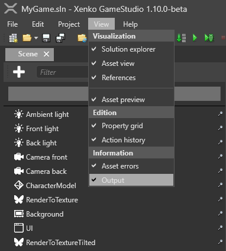

Stride for Godot developers
Editor
The Stride editor is Game Studio.

You can customize the Game Studio layout by dragging tabs, similar to Visual Studio.
For more information about Game Studio, see the Game Studio page.
Terminology
| Godot | Stride |
|---|---|
| Scene | Entity Tree |
| Inspector | Property Grid |
| FileSystem | Solution/Asset View |
| Scene view | Scene Editor |
| Node | Entity |
| Node Script | SyncScript, AsyncScript, StartupScript |
| Export | Serialize/DataMember |
| GlobalClass | DataContract |
Folders and files
- Assets
- In Godot you can store assets everywhere.
- In Stride Assets are in the Assets Folder
- Stride and Godot use the Standard C# Solution Structure. Key difference here is that Stride uses the multi Project architecture which leads to the following Projects
MyPackage.Gamecontains your source code.MyPackage.Platformcontains additional code for the platforms your project supports. Game Studio creates folders for each platform (egMyPackage.Windows,MyPackage.Linux, etc). These folders are usually small, and only contain the entry point of the program.- And any other Subprojects. Stride will scan the Subprojects too like the main Project to get DataContract classes and features into the Editor/Game ( it doesn't matter if its in a subproject or not
- Bin: contains the compiled binaries and data. Stride creates the folder when you build the project, with a subdirectory for each platform.
- obj: contains cached files. Game Studio creates this folder when you build your project. To force a complete asset and code rebuild, delete this folder and build the project again.
- Resources: is a suggested location for files such as images and audio files used by your assets, do not confuse them with Godot resources, these don't exist in Stride. Stride has in the Scene Folders (these can be used in any way) where you can put classes that would be normally Godot Resources
Open the project directory from Game Studio
You can open the project directory from Project > Show in explorer in Game Studio.

Game settings
Godot saves global settings in the Project Settings .
The location is not known to me
Stride saves global settings in a single asset, the Game Settings asset. You can configure:
- The default scene
- Rendering settings
- Editor settings
- Texture settings
- Physics settings
- Overrides
To use the Game Settings asset, in the Asset View, select GameSettings and view its properties in the Property Grid.
Scenes
Set the default scene You can have multiple scenes in your project. Stride loads the default scene at runtime.
To set the default scene:
Entities vs Nodes
Directions
Assets
Resources
Stride doesn't have Resources like Godot has. In Stride you can add Folders to your Scene and add there Entities with your Data. Another approach would be to save your former Resources in a separate Prefab and load it into the scenes that need the Data.
Supported File Formats
Like Godot, Stride supports file formats including:
| Asset type | Supported formats |
|---|---|
| Models, animations, skeletons | .dae, .3ds, obj, .blend, .x, .md2, .md3, .dxf, .fbx |
| Sprites, textures, skyboxes | .dds, .jpg, .jpeg, .png, .gif, .bmp, .tga, .psd, .tif, .tiff |
| Audio | .wav, .mp3, .ogg, .aac, .aiff, .flac, .m4a, .wma, .mpc |
| Fonts | .ttf, .otf |
| Video | .mp4 |
For more information about assets, see Assets.
Prefab Inheritance
The equivalent of Godot's inherited Scene would be ArcheTypes. Archetypes are master assets that control the properties of assets you derive from them. Derived assets are useful when you want to create a "remixed" version of an asset. This is similar to prefabs.
For example, imagine we have three sphere entities that share a material asset named Metal. Now imagine we want to change the color of only one sphere, but keep its other properties the same. We could duplicate the material asset, change its color, and then apply the new asset to only one sphere. But if we later want to change a different property across all the spheres, we have to modify both assets. This is time-consuming and leaves room for mistakes.
The better approach is to derive a new asset from the archetype. The derived asset inherits properties from the archetype and lets you override individual properties where you need them. For example, we can derive the sphere's material asset and override its color. Then, if we change the gloss of the archetype, the gloss of all three spheres changes.
Input
In Stride you have the Option to get the Input through Key Strokes like in Godot or through Virtual Buttons, which is similar to Godot's Key Mapping
public override void Update()
{
// true for one frame in which the space bar was pressed
if(Input.IsKeyDown(Keys.Space))
{
// Do something.
}
// true while this joystick button is down
if (Input.GameControllers[0].IsButtonDown(0))
{
// Do something.
}
float Horiz = (Input.IsKeyDown(Keys.Left) ? -1f : 0) + (Input.IsKeyDown(Keys.Right) ? 1f : 0);
float Vert = (Input.IsKeyDown(Keys.Down) ? -1f : 0) + (Input.IsKeyDown(Keys.Up) ? 1f : 0);
//Do something else.
}
Physics
Both Stride and Godot offer comprehensive physics engines, but their approach to handling collisions and physics-based interactions differ. Below is a comparison of their features and functionalities.
Stride
In Stride, there are three main types of colliders:
- Static Colliders: Fixed in place and do not move, typically used for environment elements like walls or floors.
- Rigidbodies: Dynamic colliders that are subject to physics simulations, such as gravity or force.
- Characters: Special colliders designed to work with character controllers.
To handle collisions in Stride, you can add methods to a delegate within the Start() method of your script. These methods will be triggered when a collision occurs. For a comprehensive tutorial on collision handling in Stride, you can refer to this YouTube Stride tutorial - Collision triggers.
Godot
In Godot, you can use a signal-based system to react to collisions. Signals are emitted when specific events occur, such as two objects colliding, and you can connect these signals to custom methods to execute your own logic.
Game Studio Editor
Both Stride and Godot offer integrated code editors, but their capabilities and recommended usage differ.
Stride
Stride comes with an integrated C# code editor within Game Studio. Although functional, this editor is not a high-priority feature and may not receive frequent updates. As such, it is generally recommended to use dedicated IDEs for code editing. Some popular choices include:
- Visual Studio Code: Free, open-source and highly extensible.
- Rider: Paid, but offers a robust set of features tailored for .NET development.
- Visual Studio Community: Free for small teams and individual developers.
- Visual Studio Professional and Enterprise: Paid versions with additional features and services.
Godot
Godot provides a built-in code editor that supports its own scripting language, GDScript, as well as C# and VisualScript. The Godot editor is more tightly integrated with the engine and is generally kept up-to-date with new features.
In summary, while both Stride and Godot offer integrated code editors, Stride's editor is best considered a supplementary tool rather than a complete IDE. It is advised to use specialized IDEs for more complex development tasks in Stride. Godot's editor, on the other hand, is robust enough for full-scale development if you are using GDScript or C#.
Scripts
Different Approaches to Scripting
In Stride, there are three types of scripts, offering a different paradigm compared to Godot. While Godot requires you to inherit from a specific class to create a node of that type, Stride allows you to extend entities by adding scripts and then searching for specific entities to interact with.
Extending Entities in Stride
For example, instead of inheriting from CharacterBody3D in Godot, in Stride you would attach a CharacterComponent to an entity. Don't forget to also attach a collision shape to make it interactable. In your scripts, you can then search for these components to manipulate them.
Stride Example
// Example of searching for a CharacterComponent in Stride
public class MyScript : SyncScript
{
public override void Update()
{
var characterComponent = Entity.Get<CharacterComponent>();
if (characterComponent != null)
{
// Perform actions on characterComponent
}
}
}
Delegation Over Inheritance
This approach in Stride embodies the principle of "Delegation over Inheritance", providing you with greater flexibility when designing your game's architecture.
StartupScript
StartupScript in Stride has a Start method, which is equivalent to Godot's _Ready method. A StartupScript primarily focuses on initialization tasks and doesn't offer much functionality beyond that.
Stride Example
public class BasicMethods : StartupScript
{
// Public member fields and properties that will be visible in Game Studio
public override void Start()
{
// Initialization code for the script
}
public override void Cancel()
{
// Cleanup code for the script
}
}
Godot Example
public class BasicMethods : Node
{
// This method is equivalent to Stride's Start in StartupScript
public override void _Ready()
{
// Initialization code for the script
}
// Godot doesn't have a direct equivalent to Stride's Cancel,
// but you could use _ExitTree for cleanup
public override void _ExitTree()
{
// Cleanup code for the script
}
}
SyncScript
Both Stride and Godot offer methods that are repeatedly called for game updates. In Stride, this method is called Update() and is part of the SyncScript class. In Godot, the equivalent is _Process(double delta).
Key Differences
- Delta Time: Stride's
Update()does not include a delta time parameter. In contrast, Godot provides the time since the last frame as an argument (delta) in_Process(double delta). - Access to Delta Time: In Stride, you can still access the delta time through the Game property,
using Game.UpdateTime.Elapsed.TotalSeconds.
Stride Example
public class BasicMethods : SyncScript
{
public override void Start() { }
public override void Cancel() { }
public override void Update()
{
// Access delta time in Stride
double deltaTime = Game.UpdateTime.Elapsed.TotalSeconds;
// Perform actions based on deltaTime
}
}
Godot Example
public class BasicMethods : Node
{
public override void _Ready() { }
public override void _ExitTree() { }
public override void _Process(double delta)
{
// Perform actions based on delta
}
}
AsyncScripts
Both Stride and Godot provide ways to run code asynchronously, but they use different approaches.
Stride Example
Stride offers a specialized AsyncScript class that allows you to execute code asynchronously using C#'s async/await syntax. The Execute() method can be awaited, allowing your code to run without blocking the main game loop.
public class BasicMethods : AsyncScript
{
// Public member fields and properties will be visible in Game Studio
public override async Task Execute()
{
// The initialization code should come here, if necessary
// Loop until the game ends (optional depending on the script)
while (Game.IsRunning)
{
await MyEvent;
// Do some stuff
// Wait for the next frame (optional depending on the script)
await Script.NextFrame();
}
}
public override void Cancel()
{
// Cleanup code for the script
}
}
Godot Example
Godot doesn't offer a dedicated AsyncScript class like Stride. However, you can still write asynchronous code in C# using the standard async/await syntax.
public class BasicMethods : Node
{
public async override void _Ready()
{
await ToSignal(GetTree().CreateTimer(1.0f), "timeout");
// Execute code after 1-second timer elapses
}
// Godot doesn't have a direct equivalent to Stride's Cancel method
public override void _ExitTree()
{
// Cleanup code for the script
}
}
In summary, both Stride and Godot offer mechanisms for running code asynchronously, but they achieve this in different ways. Stride provides a built-in AsyncScript class, whereas Godot allows for asynchronous code through standard C# mechanisms.
Script components
In both Stride and Godot, scripts are used to define behavior and logic for game entities. However, the way you attach and manage these scripts differs between the two engines.
Create a script
Stride
To create a script, click Add asset button and select Scripts.
Stride has a SyncScript class that comes with methods such as:
If you need asynchronous or startup-specific logic, you can use:
- StartupScript: this script has a single Start() method. It initializes the scene and its content at startup.
- AsyncScript: an asynchronous script with a single method Execute() and you can use
async/awaitinside that method. Asynchronous scripts aren't loaded one by one like synchronous scripts. Instead, they're all loaded in parallel.
Godot
In Godot, you can either create a script from the editor or attach an existing script to a node via the Inspector.
In Godot, you use methods like _Ready() for initialization and _Process(delta) for frame-by-frame updates. Godot also supports the async/await syntax in C#.
Reload assemblies
Stride
After creating or editing a script, you must manually reload the assemblies by clicking Reload assemblies in the Game Studio toolbar.

Godot
Godot automatically reloads scripts when they are saved, no manual reload is required.
Add scripts to entities
Stride
In the Entity Tree (on the left by default), or in the scene, select the entity you want to add the script to.

In the Property Grid (on the right by default), click Add component and select the script you want to add.

Godot
- Select the node in the Scene Tree.
- In the Inspector, click the Attach Script button or attach an existing script.
In Stride, scripts are listed alphabetically along with other components. In Godot, scripts are attached directly to nodes and appear as sub-resources in the Inspector.
For more information about adding scripts in Stride, see Use a script.
Instantiate Prefabs
In Stride, you can instantiate entities using prefabs like so:
// Public member fields and properties displayed in the Game Studio Property Grid
public Prefab CarPrefab;
public Vector3 SpawnPosition;
public Quaternion SpawnRotation;
public override void Start()
{
// Initialization of the script
List<Entity> carEntities = CarPrefab.Instantiate();
// Add the instantiated entities to the root scene
SceneSystem.SceneInstance.RootScene.Entities.AddRange(carEntities);
// Set the position and rotation for the first entity in the list
carEntities[0].Transform.Position = SpawnPosition;
carEntities[0].Transform.Rotation = SpawnRotation;
// Optionally, you can set a name for the entity
carEntities[0].Name = "MyNewEntity";
}
Serialization
Godot
In Godot, you need to inherit from an engine class for it to be visible in the editor. Additionally, only types known to the Godot engine can be exported.
Stride
Stride takes a different approach, aiming for closer integration with C#.
Data Contract Attribute
To make your class serializable within Game Studio, add the [DataContract] attribute to your class. By default, all public members will be serialized.
[DataContract]
public class MyClass
{
public int MyProperty { get; set; }
}
Data Member Attribute
If you want to be explicit about what gets serialized, you can use the [DataMember] attribute. This is similar to Godot's [Export] attribute.
[DataContract]
public class MyClass
{
[DataMember]
public int MyProperty { get; set; }
}
Excluding Members
To exclude a member from serialization, use the [DataMemberIgnore] attribute.
[DataContract]
public class MyClass
{
[DataMemberIgnore]
public int MyProperty { get; set; }
}
Collections and Dictionaries
Stride supports ICollection and IDictionary classes for serialization. Note that only primitives and enums can be used as keys in dictionaries.
In Godot you have to Export Godot Collections to be visible in the Editor.
Nested Serialization
You can serialize any class marked with [DataContract] into the editor, including abstract classes or interfaces. The Stride Editor will search for types that match the interfaces or abstract classes, making them eligible for serialization.
Log output
In Godot you can GD.Print your message. //TODO What does it mean?
To view the log output, go to the Game Studio toolbar and click on View, then enable the Output option.

Once enabled, the Output tab will appear, typically located at the bottom of the Game Studio interface.
Print debug messages
To print to the Visual Studio output, use:
System.Diagnostics.Debug.WriteLine("hello");
Note
To print debug messages, you have to run the game from Visual Studio, not Game Studio. There's no way to print to the Game Studio output window.